UX Design Internship · Karl Storz · 2026
Luna Surgical Console
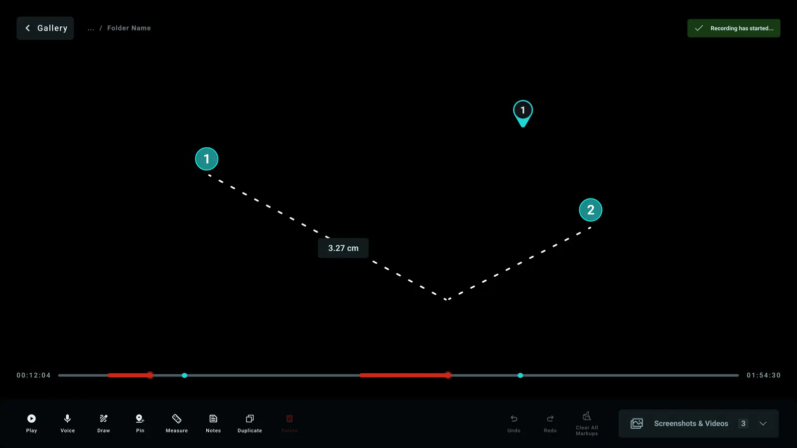
The story in short
A surgery team had one second to understand a screen. Nurses could not tell which robotic arm needed help. Residents could not review video. Scrub nurses could not see what the surgeon pointed at. I designed three fixes for a surgical console: arm identity, a gallery with a video editor, and live annotation.
Much of this work is confidential, so I can share only a few screens and no prototype. Here I focus on the problems, my process and my decisions.
Overview
Arm identity
A color bar on each arm panel shows a nurse which arm has an error or warning.
02Gallery and video editor
A gallery named by procedure step and a video editor. The old editor handled only still images.
03Live annotation
Someone on a tablet or second screen marks the live video, and the marks appear on the main screen.
The core constraint
Nobody used this screen for fun. Surgeons glanced at it for one second, so every action had to feel instant.
The product
Drawn for this case study
Drawn for this case study
How the story runs
| Project | Empathize | Define | Ideate | Design | Test |
|---|---|---|---|---|---|
| 1 · Arm identity | Nurses glanced at the arms from across the room. | Which arm, what happened, and what to do. | Warnings on the picture, and a color bar on each arm. | Arm panels and the dashboard. | H5 and H6 in the test plan. |
| 2 · Gallery and video editor | Residents looked back at images and video days later. | Find one moment without scrubbing through an hour of footage. | A gallery named by procedure step, and a video timeline. | The new gallery and video editor. | H3 in the test plan. |
| 3 · Live annotation | Scrub nurses could not see what the surgeon pointed at. | A mark reaches the main screen within a second. | Tools on a second screen, and marks only on the main screen. | Dashboard final v3. | H1, H2 and H4 in the test plan. |
Vision & principles
- 01
Informed control
The user can tell what the system just did and what it will do next.
- 02
Trust and reliability
The same tap gives the same result. Nothing appears without a clear reason.
- 03
Situational awareness
The anatomy matters most. The interface stays secondary to it.
- 04
Extensibility
I built the components first, so one color scale worked in every screen.
- 05
Clarity
Every mode has its name on screen and a marked way out.
- 06
Familiarity
I used controls people already know instead of inventing new ones.
The team’s main goal was “designing for confidence.” Six principles came from that goal, and each project below points to the ones it follows.
01Empathize
Users and environment
Drawn for this case study
Surgeon
- Where they are
- Sits at the console with hands on the controls and eyes in the 3D viewer.
- What they need from the screen
- Marks, measures, and saves images of anatomy without looking away from the surgery.
Scrub nurse
- Where they are
- Stands next to the patient in a sterile area, holding instruments.
- What they need from the screen
- Watches the wall monitor from 6 feet and sees what the surgeon points to.
Circulating nurse
- Where they are
- Walks around the room, not sterile, and handles equipment and records.
- What they need from the screen
- Answers system alerts, controls recording, and protects patient privacy.
Biomed engineer
- Where they are
- Stands at the machine before or after surgery.
- What they need from the screen
- Scans the system parts, checks the firmware, and finds hardware faults fast.
Environment constraints
02Problem
The problems
Project 1 · Arm identity
Which arm is it?
- A warning showed in one list, and the arm was only a number.
- A nurse had to match that number to a real arm in the room.
Success: the right person knows which arm, what happened and what to do, without reading a code.
Project 2 · Gallery and video editor
Where is that moment?
- The old editor worked on still images only.
- The old gallery listed times, not procedure steps.
- A resident looking back had to scrub through an hour of footage.
Success: the user finds one moment without scrubbing.
Project 3 · Live annotation
What is the surgeon pointing at?
- Scrub nurses at the wall monitor could not see what the surgeon pointed at.
- The surgeon’s hands stayed on the controls.
Success: a mark reaches the main screen within a second.
The goal
Shared awareness at a glance: everyone in the room knows which arm needs attention and what the surgeon is looking at.
Where project 1 started
Drawn for this case study
Where project 2 started
The old screens showed real patient video, so I do not show them. I redrew them as wireframes.
Redrawn from the old design
Redrawn from the old design
Where project 3 started
The old design had no way to mark the live video, so there is no old screen to show.
The old design had no live marks. That gap led to my third project.
Strategy
Engineering had limited time, so I did not plan one huge redesign. I chose three steps:
Fit into the old layouts
I added basic capture, pin, and measure tools to the old editor.
Rebuild with components
I made annotation its own mode and used the new console grid.
Use the same rules everywhere
I used one alert scale and one component library in the editor, gallery, and service screens.
Early hypothesis
If this, then that
My hypothesis: if surgeons could mark, measure and save images on the live video without looking away, everyone in the room would see what the surgeon saw.
03Ideate
Lo-fi sketches
Gallery
Video editor
Drawn for this case study
04Design
Component system
Choose what to see
Principles used Extensibility
I wrote the component rules first, so every screen looks and acts the same.
One alert scale everywhere
- GreenRunningNormal operation
- AmberWarningNeeds attention soon
- RedErrorImmediate action needed
- GreyInactiveNot in use
I used cyan only for what you picked. It never meant an alert.
Each robotic arm keeps its existing color
- Arm 1OrangeRunning
- Arm 2Light blueWarning
- Arm 3Dark blueError
- Arm 4MagentaInactive
The arm color showed only as a thin bar on the top edge of the panel.
Tools versus actions
An active tool turned into a solid block, so you spotted it right away.
Actions stayed as outlines. Delete was the only red control in the editor.
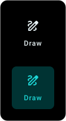
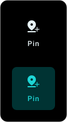
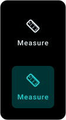
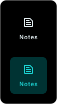
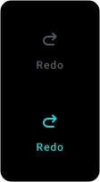
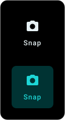
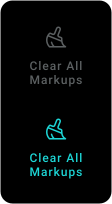
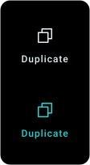
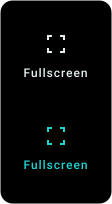
Saying it three ways
Every state used a color, a word and an icon together, which helped color-blind staff.
System banners followed the same rule.
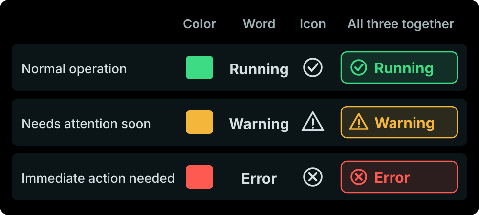
Captures
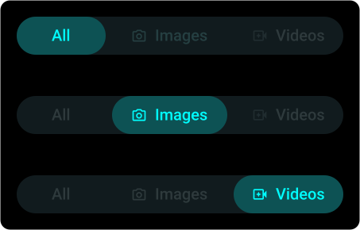
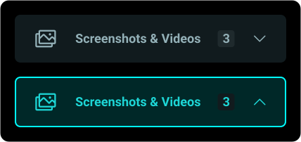
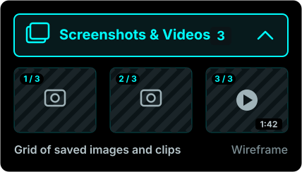
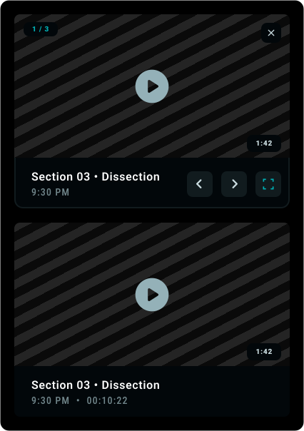
Principles used Situational awareness Clarity
- Arm 1OrangeRunning
- Arm 2Light blueWarning
- Arm 3Dark blueError
- Arm 4MagentaInactive
What I did
The robot already gave each arm its own color: orange, light blue, dark blue and magenta. I kept those colors and showed them only as a bar along the top of the arm panel.
The state showed as a dot and a word: Running, Warning, Error or Inactive. A magenta arm in error stayed magenta, and still looked like an error.
Instead of
Filling the whole panel with the arm color, or using it as the status dot. Both made it unclear which arm it was and what it was doing.
Principles used Familiarity Trust & reliability
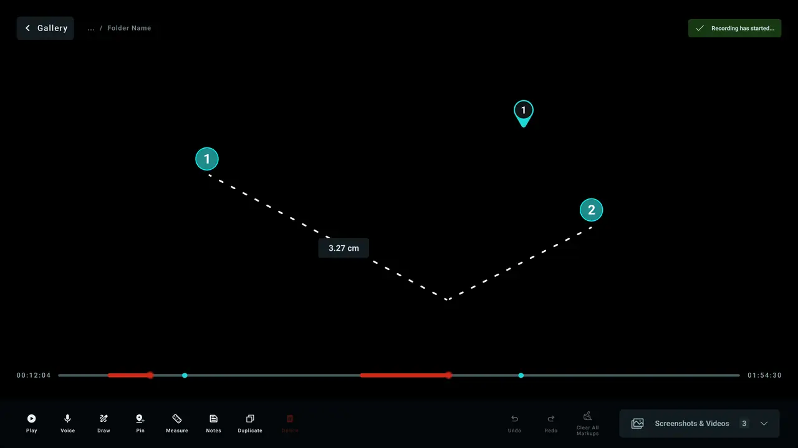
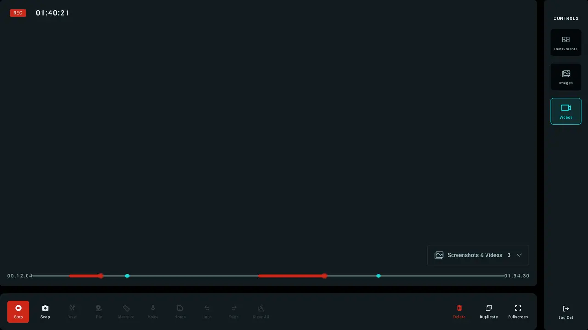
01The editor handled video
- What I did
- I added a video editor. A timeline marked recorded stretches in red and pins in cyan, so a surgeon could jump to a marked moment.
- Instead of
- An editor that only worked on still images.
02Tools moved to one labeled bar
- What I did
- Play, Voice, Draw, Pin, Measure, Notes, Duplicate and Delete sat in one bottom bar. Each icon had a word under it.
- Instead of
- A side panel of icon tabs, plus a row of action buttons across the top.
03One track for the gallery filter
- What I did
- All, Images and Videos shared one track. Cards showed small badges for voice notes and markups.
- Instead of
- Separate filter chips for markups, voice notes and written notes.
04Recording changed the screen
- What I did
- While recording, the first control became a red Stop and the markup tools dimmed. Delete, Duplicate and Fullscreen stayed on.
- Instead of
- A recording state that looked like any other state.
Project 2 · Inside the video editor
Principles used Situational awareness Clarity
I placed each region by how often people look at it and reach for it.
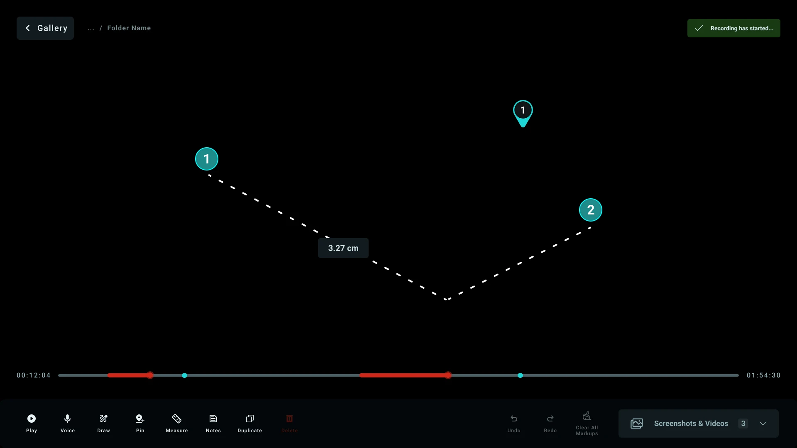
Screen region layout
Hover or tap a label to light up its regions on the screen.
Five key decisions and what each one replaced
01Annotation became a mode
One way in: a tool rail, a cyan border and a banner saying marks are live.
Instead of: Five tool buttons always in the dock. People could not tell which was on.
02Captures opened in a corner player
Saved images and clips open in a small player in the bottom right corner.
Instead of: A drawer that pushed the live video off center.
03The wall monitor showed part of the screen
Only the live camera video and the surgeon’s marks.
Instead of: A copy of the whole screen. From 6 feet away, the toolbars cluttered it.
04Pins got numbers
Numbered pins, and each measurement right where you measured.
Instead of: Pins with no numbers and a side-panel list. Nobody could call out a pin by voice.
05Voice commands got a visible log
A log on screen with the time, what was said and the reply.
Instead of: Only a chime. When a command failed without a sign, surgeons stopped trusting it.
The editor in its other states
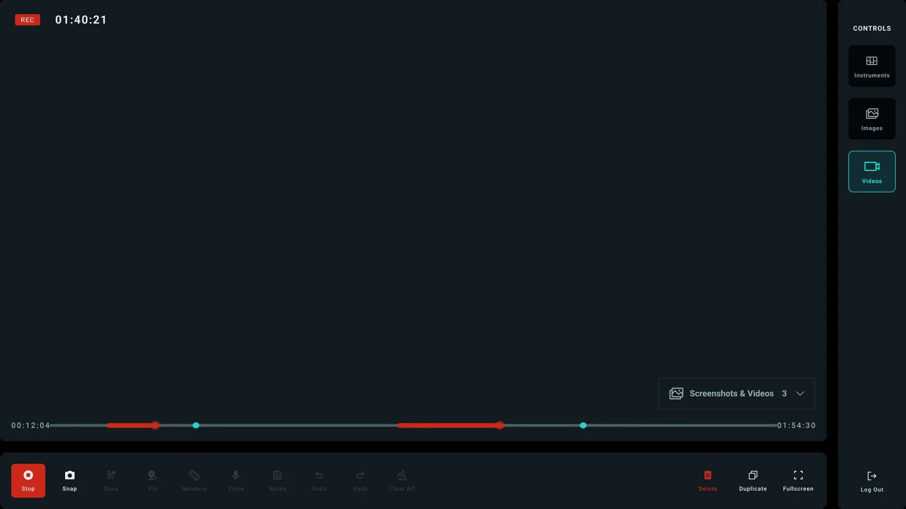
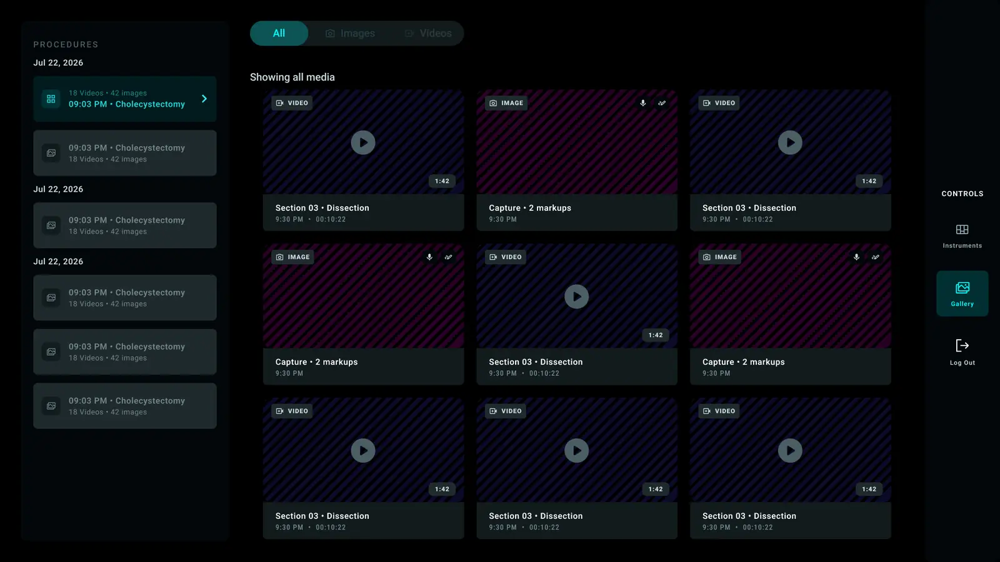
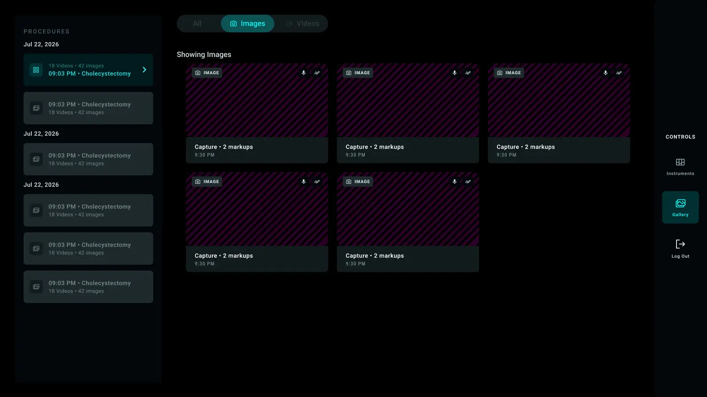
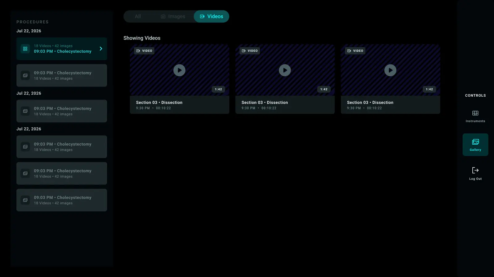
Gallery after the case: Each image got the name of its procedure step, not a random file name.
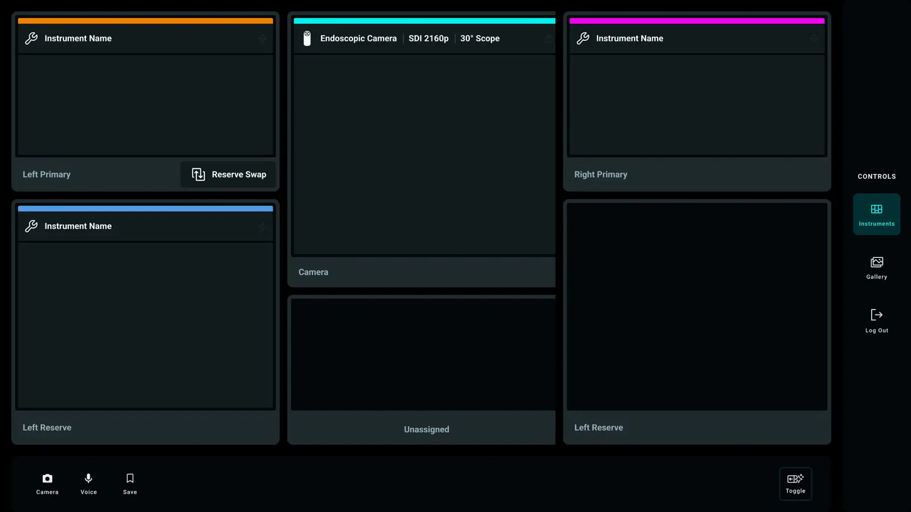
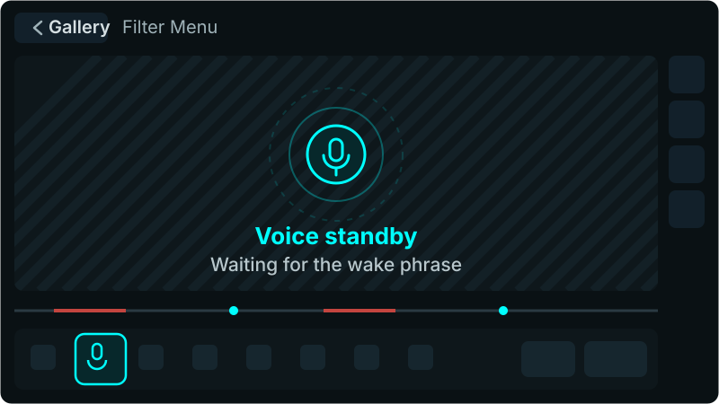
Principles used Informed control Trust & reliability
Drawn for this case study
What I did
The tablet showed the live video with the tools around it. Only the video and the marks went to the main screen.
Annotation worked as a named mode with a clear way out, so nobody guessed whether the room could see the marks.
Instead of
A straight mirror of the whole tablet. At six feet, a mirrored toolbar was clutter. The team needed the surgeon’s marks.
Still to do: an Edit button. I ran out of time, so a dashed placeholder marks where it goes.
Interactive
Find the arm that needs help
Four arms, four colors, one second. Switch between the designs I tested, from the old number-only panels to the final design, and set each arm’s state. Then take the glance test: the screen shows for one second, and you pick the arm that needs help.
- Arm 1OrangeRunning
- Arm 2Light blueWarning
- Arm 3Dark blueError
- Arm 4MagentaInactive
Which arm needs help?
Arm 1Orange
Arm 2Light blue
Arm 3Dark blue
Arm 4Magenta
Press Glance test · 1s above. The console shows for one second, then you pick the arm that needs help. Try it with each design.
05Prototype
From wireframe to prototype
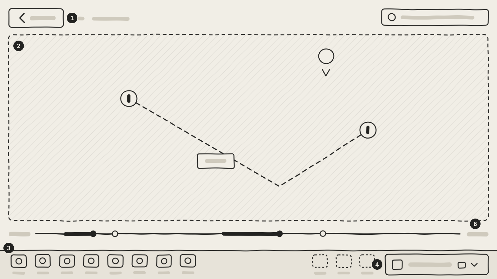
I built a prototype in Figma to check annotation mode, tap target size and how views switch.
I can’t show the prototype here because of privacy rules. It uses real clinical workflows from the project. I am happy to walk through it with you in a call.
06Test
Heuristic evaluation
- H1
Visibility of System Status
I added 3 cues (a cyan border on the video, a top banner, and a tool rail) so surgeons knew marks were live.
Fixed. - H2
Match Between the System and the Real World
I replaced engineering codes with clinical words. Some system errors still needed a review.
Still open. - H3
User Control and Freedom
I made a separate mode with a check button to exit, instead of a confusing toggle.
Fixed. - H4
Consistency and Standards
I used the same 4-color alert scale (green, amber, red, grey) on every console view.
Fixed. - H5
Error Prevention
I stopped taps on a tool from leaving a mark on the live surgery video by accident.
Fixed. - H6
Recognition Rather than Recall
I added a word and an icon to every button, so staff did not have to remember.
Fixed. - H7
Flexibility and Efficiency of Use
Keyboard shortcuts worked for expert users. Custom tool presets stayed on the to-do list.
Still open. - H8
Aesthetic and Minimalist Design
I folded the screen into 3 regions that collapsed. This kept the video clean.
Fixed. - H9
Help Users Recognize, Diagnose, and Recover from Errors
I grouped errors by robotic arm. Repeated error messages still needed to merge into one.
Still open. - H10
Help and Documentation
Help sat in the settings. I left out a full guided tour, because it could distract people in the operating room.
Still open.
How the control changed: annotation took 6 versions (pills, switches, toggles). I ended with a mode and a check button to exit.
Designed, not run
The company ended the robotic surgery program, so the formal sessions never ran. The test plan was ready.
Feedback
| Version | What it was | Why it changed |
|---|---|---|
| V1 | Watch and Annotate as two segments over the feed | Watching is not a mode. It is what the screen does when nobody asks for anything. |
| V2 | A switch inside the toolbar | Next to the tools, it looked like one more tool, not the thing that turns the tools on. |
| V3 | A floating glass pill on the feed | Too prominent, and it sat on top of a picture that mattered more. |
| V4 | The same pill, tap again to leave | A toggle makes the user remember which state they are in. Leaving needs its own button. |
| V5 | A Done button with a cross icon | A cross means cancel and throw away. Done means finish and keep. The two meanings conflicted. |
| V6 | A mode: the rail slides in, the feed gets a cyan edge, a banner names it, a round tick ends it | This is the current version. The word on its own was not enough, so the tools arrive with movement. |
I treated it as a styling problem, but it was a state problem: how does a person know which mode the screen is in, and how do they get out? Once I designed the mode, the button design became straightforward.
07Outcome
All three together
- BeforeArm identity
A nurse reads the arm bars and knows which arm needs help.
- DuringVideo editor
The surgeon marks, measures and records on the live feed.
- DuringLive annotation
Marks from another screen show on the main screen.
- AfterGallery
Captures wait there, named by procedure step.
I built all three from the same components, the same severity scale and the same arm colors.
Outcome
* From my own review of the prototype. The user study was designed, not run.
Outcome
The company ended the robotic surgery program.
My clinical supervisor said the component system and annotation mode could be the basis for future console software.
What I handed over
A working prototype
Working flows for annotation, captures, the corner player, case setup and the gallery.
A component library
One alert scale, the rules for using the existing arm colors, and the rules for how buttons act.
A test plan
A full test plan with 10 tasks and 9 ideas to test.
08Learn
Still unfinished
- You could not undo one mark, only clear all.
- Repeated error alerts did not merge into one row.
- A medical expert still had to review the clinical words.
- Live annotation still needed an Edit button.
Takeaways
- 01
Write the reason before drawing the screen
If I could not name the old pattern a choice replaced, I only drew a shape. I made no decision.
- 02
Build components before full screens
I set the alert rules early, which kept four complex parts consistent without extra fixes.
- 03
Test with a working prototype early
A running prototype showed a bug where a tap went through to the layer below. Static mockups hid it.
- 04
Design the states of the system, not single controls
When stuck, I was usually polishing a button. I should have been deciding how the system switches modes.
- 05
Familiar works better than new when mistakes cost a lot
The corner player worked because people knew it from video apps.
- 06
Test with users earlier, with rougher designs
I spent six versions polishing one control alone. Ten minutes with a surgeon would have settled it.
To follow privacy and NDA rules, I changed the screens and hid all patient and staff names.